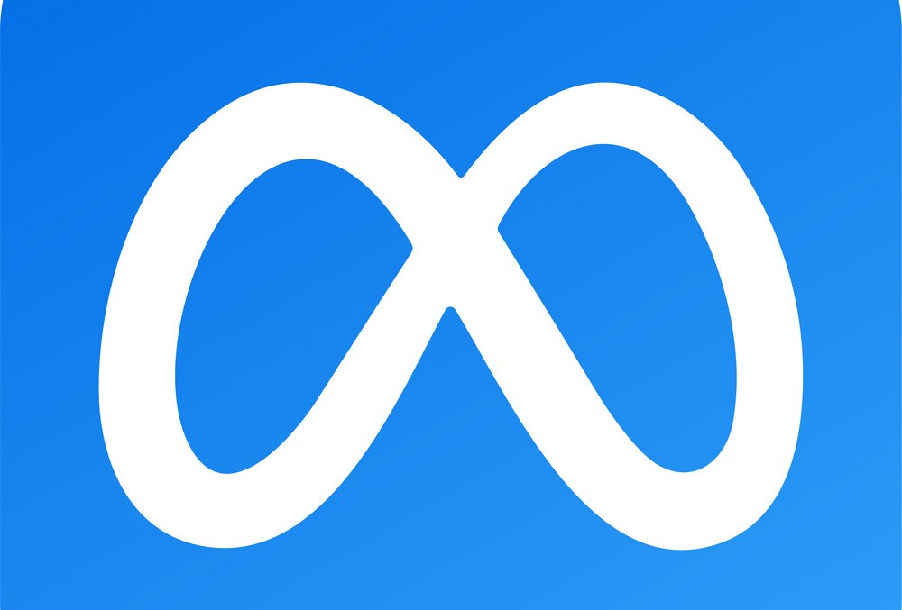

سرویس شبکه اجتماعی انلاین که در سال 2004 توسط مارک زاکربرگ طراحی شد. در ابتدا این وب سایت برای دانشجویان هاروارد بود اما بعدا برای افراد بالای 13 سال در سرتاسر جهان قابل استفاده شد.

هاروارد
دانشگاه تحقیقاتی خصوصی و یکی از اعضای هشت گانه لیگ ایوی که در ابتدا بیشتر روحانیون و خدا پرستان را تربیت میکرد.

meta
در نتیجه فیس بوک تا سال 2021 متا جایگزین فیس بوک به شمار میرود. زاکربرگ معتقد است که فیس بوک فقط یک محصول است در صورتی که متا 4 برنامه ی فیس بوک،واتساپ،اینستاگرام . پیام رسان فیس بوک را دارد.
مارک زاکربرگ
- <<<
- >>>
هاروارد
مارک زاکربرگ در رشته ی علوم رایانه تحصیل کرد. مارک شبانه روز را صرف وقت گذاشتن بر روی حرفه ی خود میکرد به طوری که در سال دوم به عنوان بهترین برنامه نویس دانشکده محسوب میشد. او به ساختن برنامه های پرکاربرد برای هاروارد علاقه بسیاری داشت در ان زمان بود که برنامه ای به نام کورس مچ ساخته بود که به دانشجوها کمک میکرد کلاس هایشان را بر اساس انتخاب کاربران دیگر انتخاب کنند این برنامه دانشجو ها را با استفاده از تشکیل گروه های مطالعه یک دیگر را به هم نزدیک می کرد. اما مارک زاکربرگ این دانشجوی تازه وارد کمی دردسر ساز بود او یک وب سایت به نام فیس مش طراحی کرده بود که به دانشجویان اجازه میداد با مقایسه دو تصویر زیبایی و جذابیت داشجوها را امتیاز دهی میکرد پس از ان نرم افزار از چهره ها را امتیاز دهی میکرد این وب سایت فقط برای تفریح و سرگرمی ساخته شده بود اما بسیار محبوب شده بود. دانشجوها دوست نداشتند که بدون اجازه تصویرشان امتیاز دهی شود برای همین مارک قوانین دانشگاه هاروارد را زیر پا گذاشت. فیس مش توهین امیز و نامناسب تلقی شد و چند روز بعد توست دانشگاه تعطیل شد او با اتحامات جدی روبه رو شد مارک در رابطه با این موضوغ گفت:<<این برنامه فقط و فقط برای یک سرگرمی طراحی شده است.>> .هاروارد او را تقریبا اخراج کرده بود اما تحصیلش به حالت تعلیق درامد او وچهار نفر از هم دانشگاهیانش به نام های دیویا لارندوا،دوقولوهای کامرون و تایلر وینگلواس تصمیم گرفتند برای ارتباط بیشتر بین نخبگان هاروارد یک سایت دوستیابی به عنوان هاروارد کانکشن طراحی کنند در حین نوشتن کد برنامه،زاکربرگ ایده ی بهتری برای شبکه ی اجتماعی خودش به ذهنش رسید